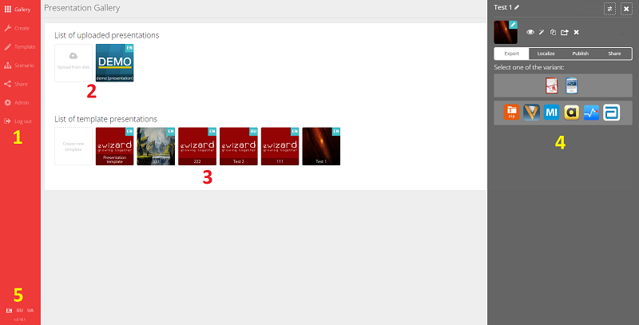
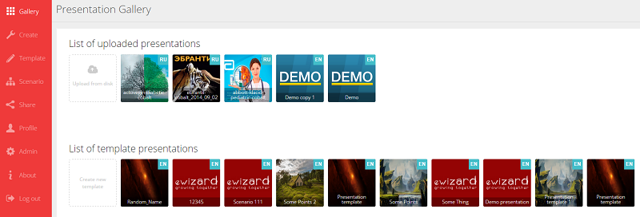
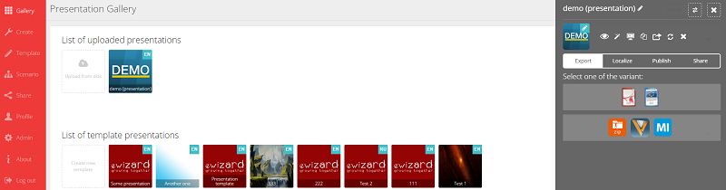

eWizard Online - это инструмент для самостоятельного создания и редактирования HTML-5 презентаций, разработанный компанией QAP INT.
Облегчение труда маркетологов и ускорение внедрения CLM процесса в фармацевтических компаниях - задача нового инструмента eWizard. Внедрение eWizard позволит Вам стать непосредственными владельцами интерактивных презентаций, самостоятельно создавать и редактировать структуру, наполнение, коммуникационные сообщения, удалять устаревшие слайды или разделы, вносить правки в соответствии c малейшими изменениями в маркетинговых стратегиях компании, утверждать новые или изменённые презентации. Новый инструмент поможет сделать работу менеджера более продуктивной, обеспечит значительную экономию времени и бюджета, возможность создать интерактивную презентацию для любого CLM инструмента всего в несколько простых шагов без навыков в программировании.
Данный инструмент поможет Вам более гибко и удобно управлять вашим HTML-5- контентом и оперативно вносить в него изменения, основываясь на последних данных и исследованиях вашей маркетинговой активности.
Примечание: в данный момент приложение поддерживается браузерами Chrome и Opera на платформе Windows, а также Safari на платформе Mac OS.
Для того, чтобы начать работу с eWizard, Вам необходимы:
- Учетная запись пользователя для входа в инструмент (Логин и пароль)
- Файлы HTML-5- презентации в формате *.zip.
Для получения учетных данных пользователя обратитесь к вашему системному администратору или к лицу, ответственному за внедрение eWizard в вашей компании.
Интерфейс
После авторизации Вы перейдете на главный экран инструмента:

Главный экран состоит из 5-ти основных частей:
-
1. Навигационная панель. Здесь расположены кнопки перехода на основные разделы инструмента:
- Галерея (Gallery);
- Создать (Create);
- Шаблоны (Templates);
- Сценарии (Scenario);
- Совместный доступ (Share);
- Профиль (Profile)
 Администрирование (Admin) – раздел доступен только пользователям с правами администратора;
Администрирование (Admin) – раздел доступен только пользователям с правами администратора;- Инфо (About)
- Выход из инструмента (Log out);
- 2. Поле, в котором отображаются загруженные вами презентации.
- 3. Поле, в котором отображаются созданные вами шаблонные презентации.
- 4. Контекстное меню, с помощью которого выполняются основные операции редактирования, просмотра и экспорта презентаций.
- 5. Панель выбора языка.
Галерея
После авторизации, перед вами откроется раздел «Галерея». В данном разделе находятся все добавленные вами презентации для редактирования. Здесь Вы можете добавлять новые презентации, создавать шаблонные презентации, копировать, удалять, а также править их, изменять структуру, просматривать готовые слайды, а также экспортировать презентации в необходимом Вам формате:

Меню презентации:
